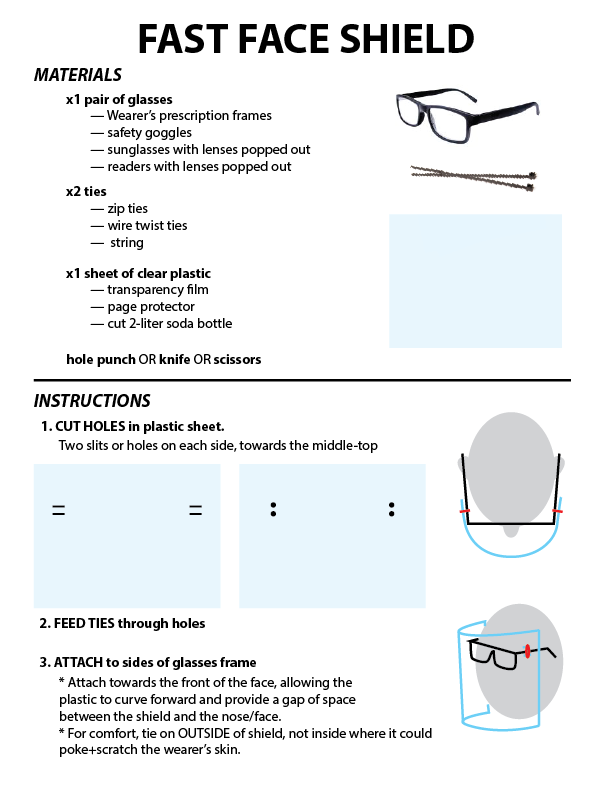
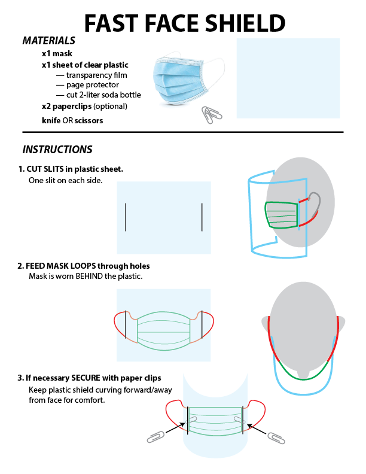

Masks and Respirators
We don't recommend 3D-printing masks and respirators. This blog post by Prusa explains it well:
We here at Prusa Research are also looking for ways to help. We have been doing a lot of research and I want to address some of my concerns about printed respirators first before we move to the main story. I don’t intend to hamper the vibe we have now – not by a long shot, but printing respirators might not be the best idea at this time. Let me explain.
None of the designs available right now have been tested to ensure they provide the protections needed, at least none of the ones I am aware of. To help with this, we have collected as many designs as we could find, and are working with experts to see if we can verify which ones really work. What are the key focus points? First, it’s the sealing, then the filter itself, the filter to the mask, and how the mask attaches to the face – it all must be perfect. Most of us print rigid materials that are hard to make compliant for seals. Even if we can get a good seal, will it remain functional e.g. even when the wearer talks?
Another question we need to take into account is the porosity of the printed parts and the safety concerns that come from that. The wearer will have the mask on their face, a humid and warm place, a perfect breeding ground for germs. We won’t be able to sterilize these masks effectively so we might be causing even more problems. And the virus reportedly survives for over 48 hours on the plastics (or even 90 hours, according to some other studies). We all want to help our friends and families which means we should be all the more precautious to keep from hurting them. If you absolutely insist on printing a mask now, treat it like it is a basic surgical mask and not as a true respirator with all the protections they provide. A false sense of security can be very dangerous. I understand you’re trying to help, but PLEASE spread this info into your 3D printing groups.
Olson Mask
However, surgical masks can be sewn, according to UnityPoint Health hospital in Cedar Rapids. The Olson Mask pattern is available here: [Internal Link]UnityPoint Health – Cedar Rapids has an adequate supply of masks however – they remain in short supply nationwide due to COVID-19. The hospital is looking to be proactive in addressing the possibility of future supply challenges. Therefore, St. Luke's is calling all sewers to help make masks. Our hope is that we won't need them, but we must plan for the unknown.
Fabric masks offer the benefit of being able to be washed and re-used as each healthcare worker will need to change their mask several times during their shifts, as the mask becomes soiled or damp – for maximum protection.
Turban Project Mask
This is another available sewn mask pattern, available via Deaconess Hospital. Instructions and patterns are available here: [external link]Face Shield
Face shields are worn by doctors and nurses when intubating patients to prevent fluids from contacting their face. They are often worn on top of N95 masks, and protects both the user and the mask. Face shields can be manufactured easily with 3D printing, laser cutting plastic sheets, or potentially die-cutting plastic sheets.
Logistics + Legal
When manufacturing PPE, follow these instructions recommended by Prusa Research:- Act as if you were infected by the COVID-19 virus. Wear a face mask and a fresh pair of gloves when collecting each batch of printed parts. Store the parts immediately in a sealable bag.
- Talk with whoever you’re making the shields for, let them know about your manufacturing environment.
- There is still debate about how long the virus survives on plastic, but most sources mention 2-3 days. That means that by letting the packed face shields sit for 2-3 days before distributing them, you’ll greatly reduce risk of transmission.
- Do not store the entire stock in one place, minimize the risk of cross-contamination.
Fast Face Shield
 This design is recommended for healthcare workers that need last-resort face shields. They can be made with any sheet of plastic, including overhead transparencies, sheet protectors, and more. You can download instruction PDFs here:
- Fast Face Shield for Glasses: [internal link]
- Fast Face Shield for Masks: [internal link]
Prusa RC2

This is currently the most popular design for 3D printing face shields. Designed by Prusa Research, it involves 3D printed parts, a laser cut face shield, and an elastic backing.
- Blog post: [external link]
- Design: [external link]
Companies are also printing and selling this design.
- Shapeways is selling just the 3DP parts for $40 [external link]
- Voodoo Manufacturing will be selling the completed shield for $10 at bulk [external link]
Miniband Mod

The Miniband mod is a Prusa-shield-compatible 3DP headband designed by a member to significantly reduce the print time. We estimate a ~30 minute print time. Printer settings to minimize the print time are recommended, such as 2 shells, 15% infill and the highest layer height possible with your nozzle size. This design is in the process of being verified by a hospital. Please do not print these at scale before they are verified.
- v1: [internal link]
- v2 with hooks for shield mounting: [internal link]
- v3 with small lips at the edge to prevent shield from slipping onto the frame and a taller elastic hole to fit 14mm elastic bands: [internal link]
- v4 with center link to reduce flexibility at forehead contacts:
[internal link] - v5 with fixed dimensions for prusa shield:
[internal link] - v6 with actual fixed dimensions in progress
- minified bottom support: [internal link]
Budmen

This is also a 3D printed design by Budmen Industries. Requesting or manufacturing the design requires registration. [external link]
WISC

This is a face shield manufactured from a plastic sheet, foam tape, and elastic. This design takes far less time to manufacture, but is disposable due to the unsanitizable foam.
- Main website: [external link]
- Delve post: [external link]
- Design PDF: [external link]
- Plastic: [external link]
- Foam: [external link]
- Elastic: [external link]
- Staples
Ongoing
Columbia
Columbia University is currently designing a face shield that can be entirely cut and assembled from a single sheet of plastic. This reduces manufacturing time and material sourcing issues. Once completed, they can be diecut in mass quantities. This website will be updated if a design is finalized and available.NYU
NYU Tandon reached out to one of our members with a design that uses a plastic sheet and riveted elastic. This website will be updated if a design is finalized and available.Ventilator Parts
Delivered PPE
- 2020-3-22: 97 WISC masks to Elmhurst